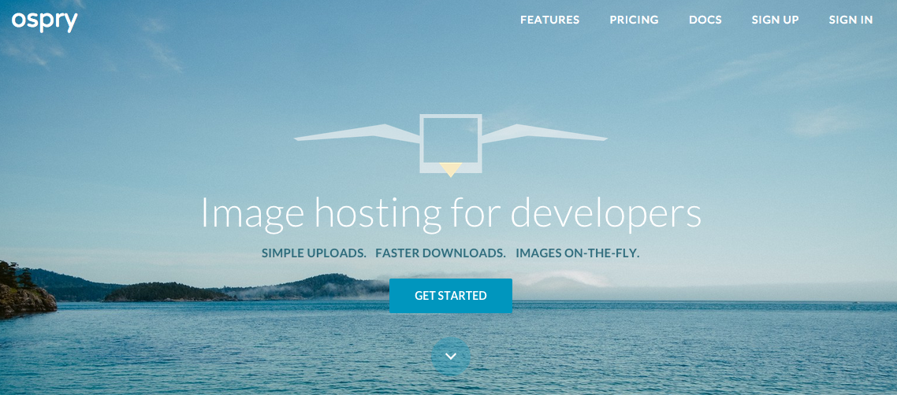
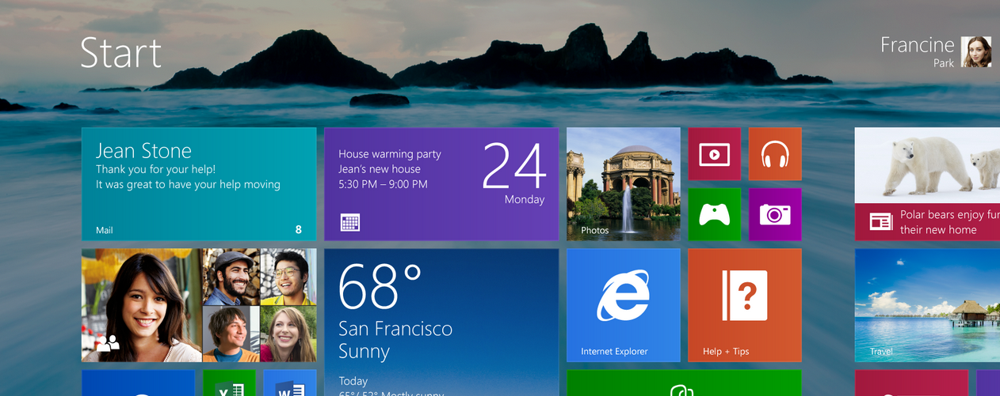
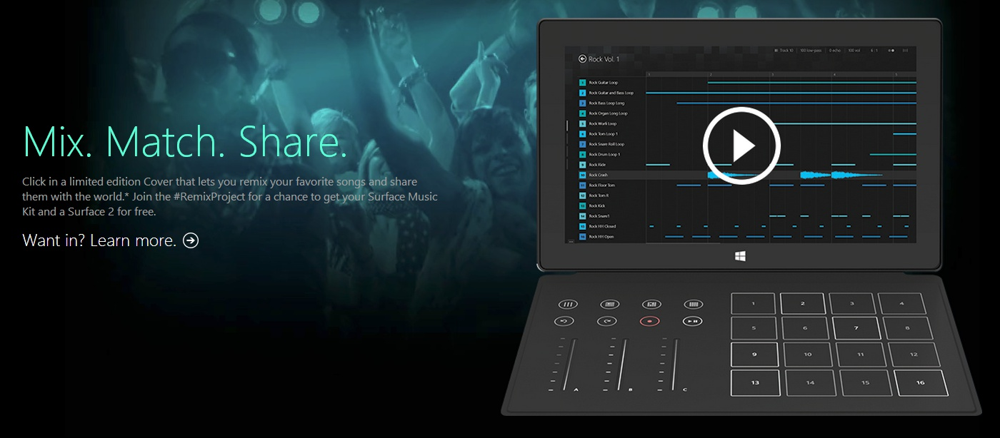

Startups
I've co-founded two software companies.
*Embark was acquired by Apple in 2013.
Embark was our take on making public transit simple.
The company was funded by Y Combinator in 2011, where the folks from Weightshift and Sandwich Video helped develop the brand.
Embark offers a unique ability to perform offline routing when no cell connection is available. Today, it helps travelers in some of the largest transit cities in the world.
I helped design and implement the iOS client, and was responsible for our server infrastructure to support real-time updates.
Embark was acquired by Apple in 2013.

Ospry is designed to be the simplest way for developers to host their images.
Ospry provides cross-platform uploads, reliable storage, CDN downloads, and privacy settings. Developers also have access to basic, on-demand image processing.
The concept embraces the Parse model of abstracting back-end infrastructure into consumable services.
I designed and implemented the web front-end, wrote the Node.js and Javascript libraries, and helped design the backing service API.
Jobs
I've helped ship some cool products at Microsoft.
I also got to play with some hardware.

As a PM for the Windows Reliability & Security team, I helped design and lead implementations of several key Windows 8 security features - including automatic updates & "always on" protection for Windows RT, and a user experience for removing and replacing expired antimalware software.
We built a version of Windows that made it simple to get protected.
I also worked on Push Button Reset - a tool for repairing and recovering your system across Windows 8 & 8.1 upgrades.

The Surface Remix Project was designed to let users mix and create music using a special hardware extension for the Surface.
I helped scope the vision and feature set for the software, and owned the UX for project management, browsing, and content download.
The Surface Music Kit was a limited edition release, during which users had the chance to have their creations reviewed by artists like Linkin Park.
Other Projects
26 Hours
Helping 26 startups.
(2014)
For my 26th birthday, I gave away 26 one-hour sessions to 26 startups who asked for help. We covered feature design, product launches, pitching, etc.
More than 100 companies replied in the first 48 hours. Many of the 26 still keep in touch today.
I wrote about the experiment on Medium.
WriteHub
Inline Markdown for the web.
(2013-Present)
WriteHub is an experimental markdown editor that lets you write and publish web pages. All editing is done in-line, which makes for a cool editing experience.
Thousands of people have tried it, and we'll be transitioning the editor to open source development.
Site Design
Iteration ad infinitum.
(2012-Present)
When I started developing, I had never touched graphic design. Logos and small designs came out of necessity, and lacked craftsmanship.
I've started spending more time on design theory, and am actively picking up new tricks. I designed this site, and (most recently) ospry.io.
Tube Amps
Going analog.
(2013-Present)
In October 2013, I hand-built a replica of an early Fender Tweed Deluxe. I did more soldering in 4 days than I'd done the rest of my life.
The amp came out great, and is the first of many more to come. Thanks to the folks a Specimen for the help.
Prototypes
Building to learn.
(Ongoing)
I learn best by trying things out. There's always a few prototypes floating around.
Most recently, I've done some work with rynlbrwn around synchronized audio streaming, file sharing, and WebRTC.
About
Tom Hauburger
I enjoy interesting problems, interesting people, and the chance to work with both. I studied computers and startups at USC & YC.
I live in Redmond, WA with my wife & puppy. When I'm not working on software, I coach Little League baseball, talk myself into CrossFit workouts, and steal a few minutes on the guitar.